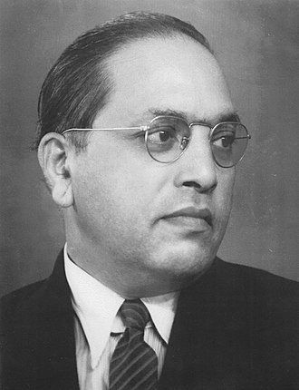

B. R. Ambedkar
A leader who dedicated his life to eradicating social inequality in India

Ambedkar as a young man
Timeline
- 1897 - Ambedkar's family moved to Mumbai. Ambedkar became the only student from a backward caste, to enroll at theElphinstone High School. Even there, he had to face casteprejudice and discrimination
- 1906 - His marriage was arranged with nine-year-old Ramabai.
- 1907 - Ambedkarpassed his matriculation examination and entered Elphinstone College.
- 1912 - He obtained his degree in economics and political science fromBombay University, and prepared to take up employment with the Baroda state government.
- 1913 - He was awarded a Baroda State Scholarship by the Gaekwadof Baroda–Sayaji Rao III, and Ambedkar went to Columbia Universityin America,for his post-graduate education
- 1917 - The Maharaja of Baroda appointed Ambedkar as his ‘Defense Secretary’